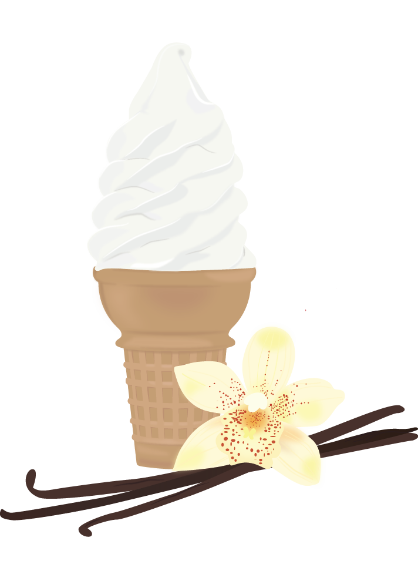

VANILLA
Vanilla? Really? That’s probably what you’re friends say anyways when you request this stereotypically ‘boring’ flavor. It’s okay, embrace your simplicity and choice in a classic ice cream flavor. While you typically like to take the safe road, you are a reliable human being whom your friends and family can trust with their deepest secrets. You don’t always choose the straightest arrow either. With a little prodding from your thrill seeking friend and some research you are down to jump out of that airplane with nothing but a parachute (as long as there is a vanilla cone waiting for you upon landing safely on the ground).

COOKIES 'N CREAM
If you crave those Oreo filled bites of creamy goodness then you are probably a loving, adventure seeker with a big sweet tooth. One sweet treat isn’t enough for you, so that’s why you go for the dual explosion of cookies and ice cream (and the occasional addition of hot-fudge). You’re almost always up for a good time, especially if it means you’re best friend can tag along. There’s also a chance that you have a hidden nerd inside of you. When you’re not out adventuring with your best bud, you likely have your nose in a book and a big bowl of cookies n’ cream ice cream in your lap.
COOKIE DOUGH
If your first pick of ice cream is filled with chocolate chips and cookie dough then you’re a child at heart. You’re an innovator who’s easily excited about most anything, which is why all of your friends love having you along for any night on the town or last minute road trip. Hopefully your friends and/or significant other know what they want, because with your excitement comes a lot of indecisiveness. Should your ice cream be in a cup or cone? You can add chocolate sauce too?! All of these choices are overwhelming. Have no fear, whatever you chose, that cookie dough ice cream will still be there to please your senses.
MINT CHIP
If you’re scoop of choice is usually that refreshing mint chip there’s a good chance you’re a go-getter. You are confident in yourself and your decisions, which is why you like to constantly mix things up and keep your life interesting. This is even the case when it comes to ice cream; mint chip might be your favorite, but sometimes you just have to try that spicy chocolate. You greatly enjoy the company of friends, but you aren’t afraid to go off exploring on your own. Sometimes this confidence can bring you trouble though, especially when you open your mouth before thinking through that sarcastic comment you just made to your grandmother.
STRAWBERRY
So you’re one of those rare breeds who likes the fruity ice cream? Don’t worry, this means good things. You’re an extrovert. You sway to your own beat and you aren’t afraid to show it; just like you aren’t afraid to admit you love one of societies least favorite ice cream flavors. In addition to your bold, confident personality, you’re also a logical thinker. Your education and career are extremely important to you and you won’t let silly mistakes mess them.
NEAPOLITAN
If you picked the triad of flavors then you’re the people pleaser. You have a huge heart and somehow manage to find the good in everything. That’s why you chose to eat the one ice cream flavor that’s three-in-one, because they’re just all so good. On that note, however, this also means you are extremely indecisive. When you’re constantly trying to make everyone happy, it’s hard to take a stand and commit to something. The plus side? You’re friends and family love you to death and can’t get enough of you. So keep on keeping on, relax now and then, and indulge in that big bowl of three-flavored ice cream.
COFFEE
You’re a sly dog. If you chose a dish of frozen coffee then you’re the classiest of all your mates, and you know it. You know exactly what you want and precisely how to get it. This is partially due to your impeccable wit and keen way with words. While you dearly love all of your companions, you’d prefer to spend Friday evening relaxing with a good book than running around town to all of those rambunctious bars and clubs. While you may not be up for the on-a-whim cliff diving excursions with you mates, they turn to you first for serious advice because they can trust you to tell the complete truth (even if it might be a bit harsh).
ROCKY ROAD
If you prefer that chunky chocolate ice cream then you’re the wild-child who knows what you want. You’re more aggressive than your counterparts, which makes you extremely competitive in nearly all aspects of your life. You can thank your competitive and risk taking genes for aiding in your successful education and/or career. Just be careful not to completely plow over the people you care about in your journey to success!

CHOCOLATE
If you love that rich and creamy chocolate ice cream then you are likely a simple-minded and reliable being. While you like to avoid any and all drama, you crave the company of your friends and family. You’re usually that friend who people vent to because they know you’ll just listen, occasionally chiming in with an insightful piece of advice. You fear the idea of disappointing anybody, which is why you usually try to play it safe in most situations. Time to get out of this safe zone! Order a cone rather than a cup the next time you feast your eyes on that delicious chocolate ice cream. Who cares if some if melts onto the front of your shirt; wear that chocolate stain with pride you loving fool.
The Method Behind the Flavor Madness
The content for this website was generated by the responses from a survey, which was give to friends, family, and co-workers
Sample questions from the given survey:
- Of the following, what is your favorite ice cream flavor?
- Vanilla
- Chocolate
- Mint Chip
- Cookies 'N Cream
- Cookie Dough
- Coffee
- Rocky Road
- Strawberry
- Neapolitan
- How many scoops of ice cream do you usually take?
- 1
- 2
- 3
- 4 or more
- Cup or Cone?
- Cup
- Cone
- Pick a topping:
- Nuts
- Fruit
- Chocolate Sauce
- Nothing
- Your friend asks to try your ice cream. You respond:
- I guess, if I can try yours
- Why didn't you try it at the counter?
- Back off! This is mine and only mine
- Of course! Let me know if you want more
- Food fight! What's your strategy?
- Pray everyone leaves you alone
- Run around wildly, pelting anyone that gets in your path
- Form and alliance with your friends
- Invent a catapult to launch the food further
- What's your ideal super power?
- Teleportation
- Super strength
- Mind reading
- X-ray vision
- You're at the beach. What are you doing?
- Reading a book
- Sun bathing
- Splashing around in the water
- Playing volleyball or frisbee
- It's a warm summer day and you're driving around with the windows down. What song are you listening to?
- "What I Got" by Sublime
- "Fly" by Sugar Ray
- "Party in the U.S.A." by Miley Cyrus
- "Cruise" by Florida Georgia Line
- "Dani California" by Red Hot Chile Peppers
- "California Girls" by Katy Perry
- You hear the ice cream truck coming. What's your move?
- Grab the nearest friend so you can enjoy a sweet treat with someone else
- Leave behind your dignity and chase after it.
- Look for your flavor. If they don’t have it you just walk away.
- Buy three different flavors because you’re too indecisive to pick just one